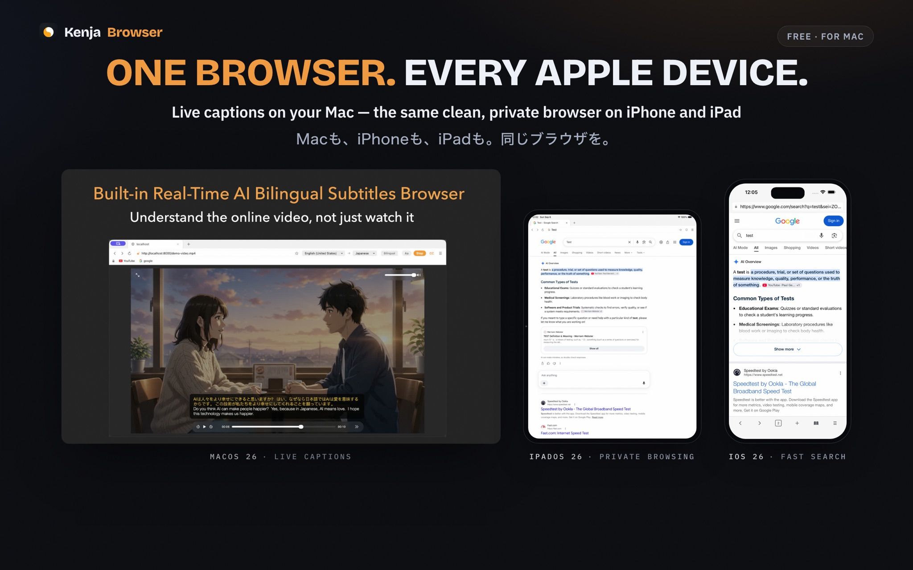
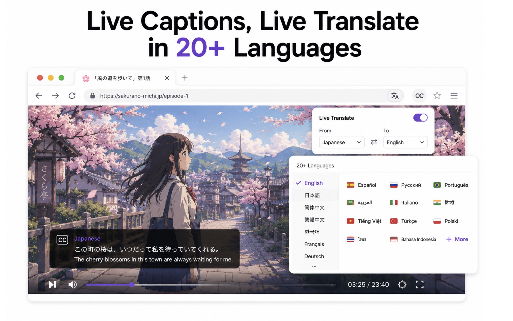
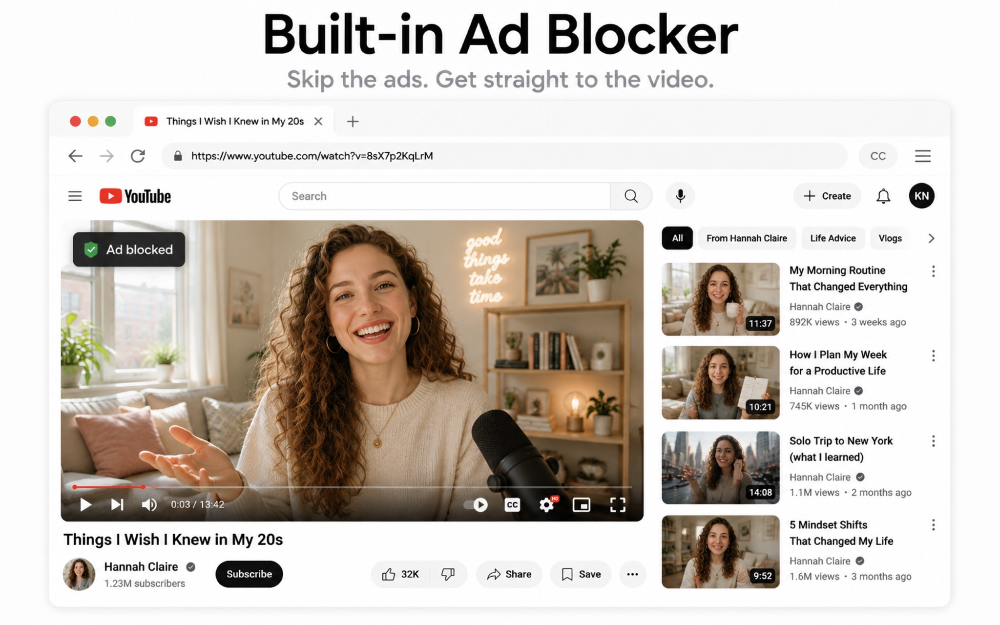
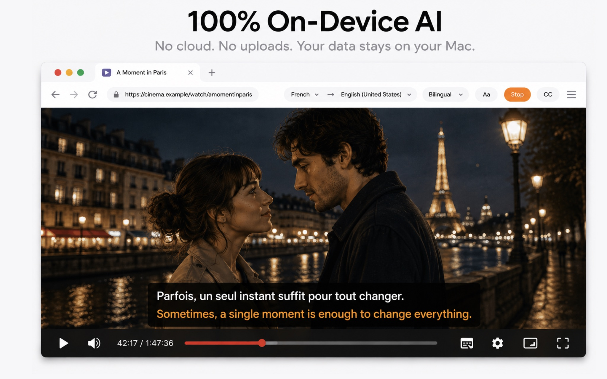
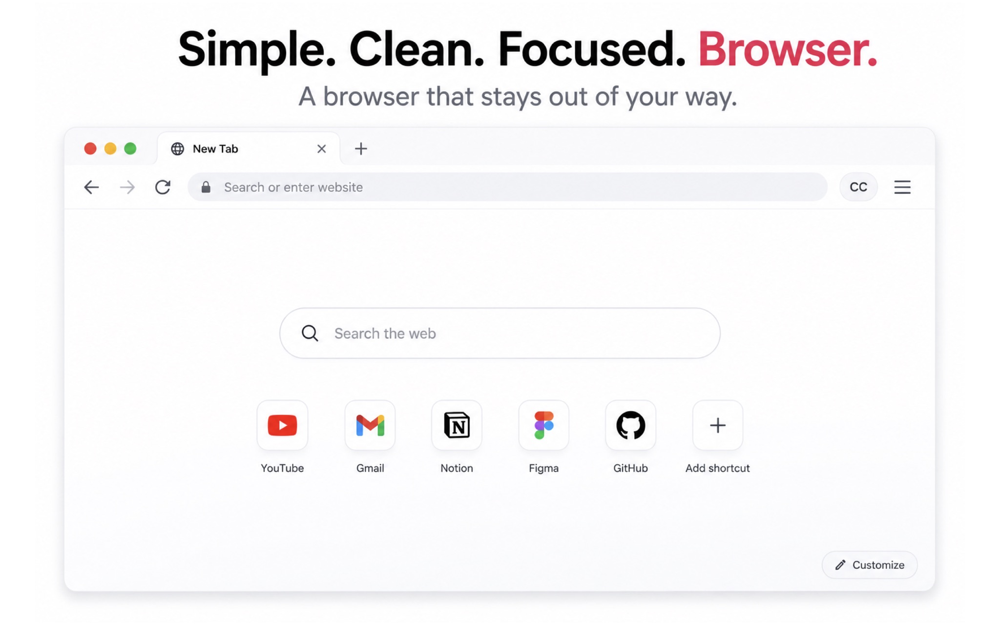
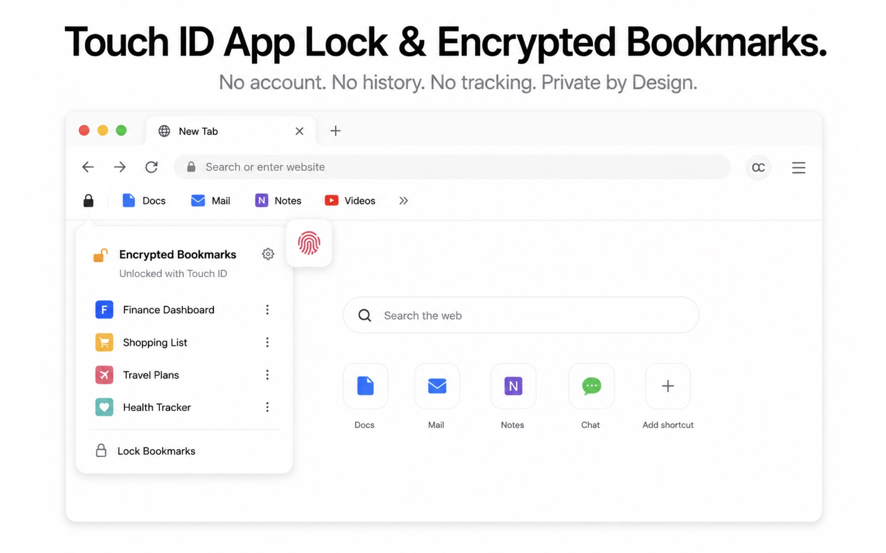

Live bilingual captions · macOS 26+
Any video.
Real-time bilingual captions. Zero cloud.
KenjaBrowser is a Mac browser that shows original speech and translation together as live subtitles — on YouTube, news sites, courses, and live streams. The AI runs entirely on your Mac: no uploads, no tracking, no data collection.
Also on iPhone & iPad — the same clean, private browser: ad-free, Face ID locked, zero tracking. See the iOS app →
// the same bar floats above any video, in any language pair
How it works
Three steps. No setup. No accounts.
Play any video
Open YouTube, a news site, an online course, or a live stream in KenjaBrowser and press play.
Pick a language pair
Choose source and target languages — for example English → 日本語 or 한국어 → English — and switch anytime.
Read live captions
The floating caption bar shows original speech and translation together, in real time, as the video plays.
Features
A private browser built for watching — and learning
Everything runs locally on your device. KenjaBrowser is deliberately lean, which makes it the ideal secondary browser for video, language learning, and private browsing — on Mac, iPhone, and iPad.
Real-time bilingual captions
Live subtitles for any web video: original speech and translation displayed side by side, updating as people speak.
100% on-device AI
Speech recognition and translation run on your Mac. Your audio never leaves the device — nothing to upload, nothing to leak.
14 + 25 languages
Speech recognition in 14 languages, translation into 25 — from English, Chinese, and Japanese to Spanish, Korean, and Thai.
Built-in ad blocker
An integrated content blocker auto-skips video ads and popups on most websites — cleaner pages, faster loading.
Touch ID lock & private bookmarks
Lock the whole browser with Touch ID and keep bookmarks in an encrypted vault. No history page is kept, ever.
Your ideal secondary browser
Simple, clean, and fast. Use it alongside your main browser for video, study sessions, and anything you want kept private.
iPhone & iPad
One download. Every Apple device.
The same clean, private browser wherever you go — live bilingual captions on the Mac, a fast, ad-free browser in your pocket. One App Store app covers them all.

KenjaBrowser for Mac
macOS 26+- Real-time bilingual captions for any web video
- 100% on-device speech recognition & translation
- 14 recognition · 25 translation languages
KenjaBrowser for iPhone & iPad
iOS 26+- Fast, clean browsing with a built-in ad blocker
- Face ID / Touch ID app lock & encrypted vault
- No history page, no tracking, free
Screenshots
See KenjaBrowser in action
From the App Store listing — live bilingual captions on Mac, the same clean browser on every Apple device.
Real-time bilingual captions
Any web video — YouTube, courses, live streams — with the original speech and its translation shown together, recognized and translated on-device.
One browser. Every Apple device.
KenjaBrowser runs natively on Mac, iPhone, and iPad — live captions on the Mac, the same clean, private browser in your pocket.
14 languages in, 25 out
Hear it in 14, read it in 25 — switch language pairs live, on any video.

100% on-device AI
Speech recognition and translation run entirely on your Mac. No uploads, no cloud, no tracking — your audio never leaves the device.

Works with any website
News, courses, streams — if it plays in the browser, it's captioned. No extensions, no setup.

One toolbar. Total control.
Swap languages, switch bilingual display, restyle captions — live from the toolbar, without ever leaving the video.

Lock it, block it, keep it yours
Built-in ad and tracker blocker, Touch ID app lock, and an encrypted bookmark vault — no history page, nothing collected.

Privacy first
Your audio never leaves your Mac.
Speech recognition, translation, and browsing all happen locally. KenjaBrowser has no backend, no analytics SDK, and nothing to collect.
FAQ
Frequently asked questions
What is KenjaBrowser?
KenjaBrowser is a secondary browser for macOS that adds real-time bilingual captions to any online video. Its speech recognition and translation run entirely on your Mac using on-device AI, so you can watch YouTube, news, courses, and live streams with the original speech and a translation displayed together as subtitles.
Does KenjaBrowser upload my audio to a cloud server?
No. Speech recognition and translation are processed locally on your device. There are no audio uploads, no cloud processing, no tracking, and no data collection. The App Store privacy label is Data Not Collected.
Which websites and videos are supported?
Any website that plays video in the browser: YouTube, news sites, online courses, live streams, and more. Just play the video and turn on captions.
Which languages are supported for live captions?
Speech recognition supports 14 languages including English, Chinese (Simplified and Traditional), Japanese, Korean, French, German, Spanish, Russian, Arabic, Thai, Vietnamese, Indonesian, Italian, and Portuguese. Translation supports 25 languages, and you can switch language pairs anytime.
Is KenjaBrowser free?
The app is free to download and includes all core browser features with a starter allowance for bilingual captions. Kenja PRO optionally unlocks unlimited captions — plans and pricing are shown in the app.
Which Macs can run KenjaBrowser?
KenjaBrowser requires macOS 26.0 or later. On first use of live captions, macOS asks for a one-time Screen & System Audio Recording permission that covers only the app's own audio — no system-wide capture, no screen content, and no microphone input is ever recorded.
Is KenjaBrowser available on iPhone or iPad?
Yes. KenjaBrowser also runs on iPhone and iPad (iOS 26.0 or later) as a fast, private secondary browser: built-in ad blocker, Face ID / Touch ID app lock, encrypted bookmark vault, and no data collection. Live bilingual captions currently require the Mac app. One App Store download covers all your devices.
Download
Start watching with bilingual captions today
Free on the App Store for Mac, iPhone, and iPad. On-device AI, no account required.